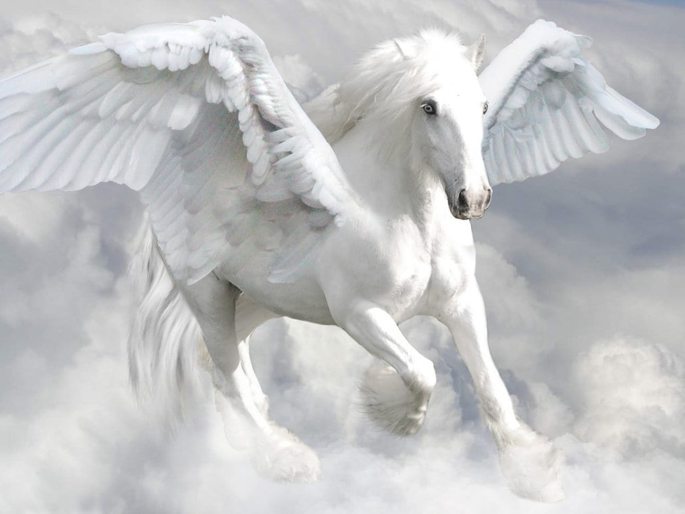
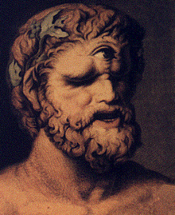
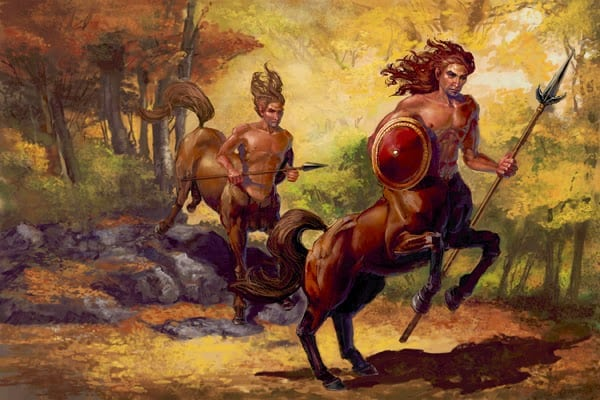
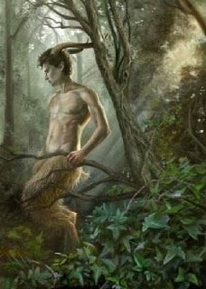
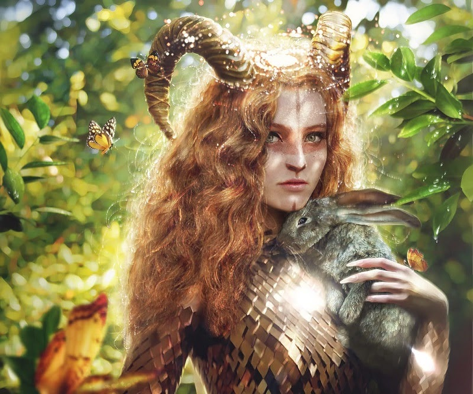
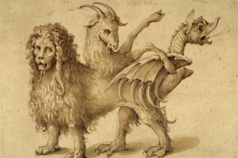
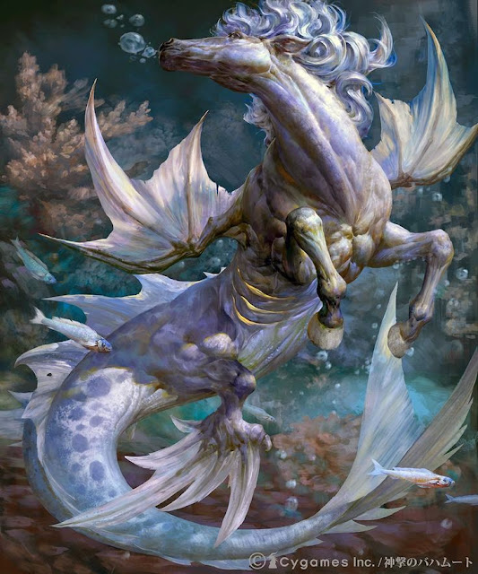
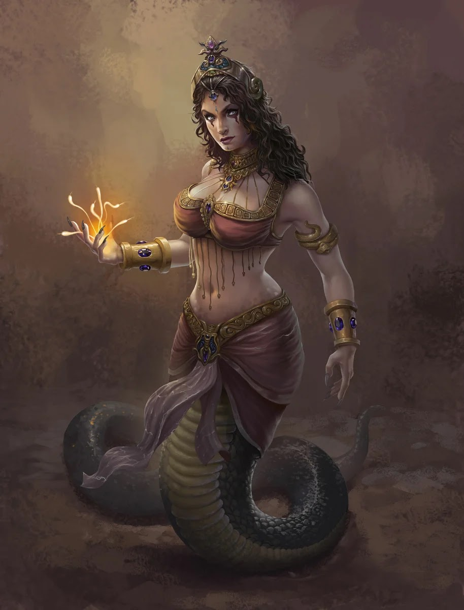
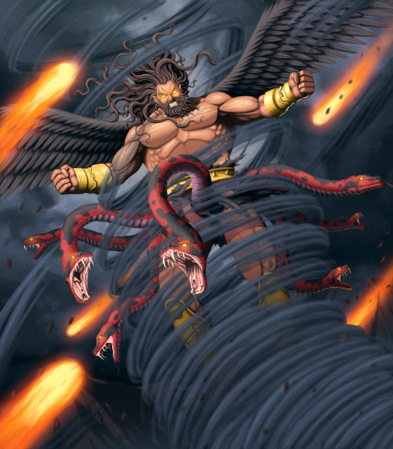

Pégaso

Pégaso, na mitologia grega, é um cavalo alado símbolo da imortalidade. Sua figura é originária da mitologia grega, presente no mito de Perseu e Medusa. Pégaso nasceu do sangue de Medusa quando foi decapitada por Perseu.
Belerofonte matou a poderosa Quimera, montando Pégaso após domá-lo com ajuda de Atena e do cabresto de ouro, que em seguida tentou usá-lo para chegar ao Monte Olimpo. Mas Zeus fez com que ele derrubasse seu cavaleiro fazendo uma vespa o picar, e Belerofonte morreu devido à grande altura. Zeus o recompensou transformando-o na constelação de Pégaso, onde deveria dali em diante ficar à serviço dos deuses. Outra história diz que quando Zeus mandou a vespa e Belerofonte caiu, Atena ordenou que o chão ficasse macio, assim ele não morreria pela queda.
Minotaruo

O Minotauro é um personagem da mitologia grega cuja representação mais tradicional entre os gregos antigos era uma criatura com a cabeça de um touro sobre o corpo de um homem. O autor romano Ovídio descreveu-o simplesmente como "parte homem e parte touro". Habitava no centro de um Labirinto, uma elaborada construção erguida para o rei Minos de Creta, e projetada pelo arquiteto Dédalo e seu filho, Ícaro especificamente para abrigar a criatura. O sítio histórico de Cnossos, com mais de 1300 compartimentos semelhantes a labirintos, já foi identificado como o local do labirinto do Minotauro, embora não existam provas que confirmem ou desmintam tal especulação. No mito, o Minotauro posteriormente morre pelas mãos do herói ateniense Teseu.
O termo Minotauro vem do grego antigo Μῑνώταυρος, composto etimologicamente pelo nome Μίνως (Minos) e o substantivo ταύρος ("touro"), e pode ser traduzido como "(o) Touro de Minos". Em Creta, o Minotauro era conhecido por seu nome próprio, Astério, um nome que ele compartilhava com o pai adotivo de Minos. Originalmente, Minotauro era apenas utilizado como nome próprio, referindo-se a esta figura mítica. O uso de minotauro como um substantivo comum que designa os membros de uma raça fictícia e genérica de criaturas antropogênicas com cabeças de touro surgiu bem posteriormente, no gênero de ficção fantástica do século XX.
Ciclope

Os ciclopes eram, na mitologia grega, gigantes imortais com um só olho no meio da testa que, segundo o hino de Calímaco, trabalhavam com Hefesto como ferreiros, forjando os raios usados por Zeus.
Os ciclopes podem ser divididos em dois grupos de acordo com o tempo de existência: os ciclopes antigos (ou primeira geração) e os ciclopes jovens (nova geração).
Eles aparecem em muitos mitos da Grécia, porém com uma origem bastante controversa. De acordo com sua origem, esses seres são organizados em três diferentes espécies: os urânios, filhos de Urano e Gaia, os sicilianos, filhos do deus dos mares Posídon, e os construtores, que provêm do território da Lícia.
Centauro

Os Centauros são seres míticos da mitologia grega cujo corpo é formado por parte de um homem - que corresponde ao tronco, braços e cabeça - e o restante do corpo de um cavalo.
Eles representam o instinto animal em junção com a inteligência humana, metáfora das ações dos homens numa situação de perda de controle.
Essas criaturas vivem em florestas e montanhas e se alimentam de carne crua. Apresentam muita energia física e aparecem, geralmente, em bando.
A simbologia dos centauros se opõe, pois, tanto podem ser delicados e encantadores como ignorantes e agressivos. Do grego, Kentauros significa "matador de touros".
Sátiro
Na mitologia dos povos gregos, os sátiros são divindades menores da natureza com o aspecto de homens com cauda e orelhas de asno ou cabrito, pequenos chifres na testa, narizes achatados, lábios grossos, barbas longas.
Normalmente eram-lhes consagrados o pinho e a oliveira e apesar de serem divinos, não eram imortais.
Viviam nos campos e bosques e tinham freqüentes relações sexuais com as ninfas (principalmente as Mênades, que a eles se juntavam no cortejo de Dioniso).
Ninfa
Ninfas, na mitologia grega, são espíritos naturais femininos, ligados a um local ou objeto particular da natureza. Muitas vezes, ninfas compõem o aspecto de variados deuses e deusas, ver também a genealogia dos deuses gregos. São frequentemente alvo da luxúria dos sátiros. Simplificando, as ninfas seriam fadas sem asas, leves e delicadas. São a personificação da graça criativa e fecundadora na natureza.
Ninfa deriva do Νύμφη (ninfa), que significa "noiva", "velado", "botão de rosa", dentre outros significados. Eles são espíritos, habitantes dos lagos e riachos, bosques, florestas, prados e montanhas.
São frequentemente associadas a deuses e deusas maiores, como a caçadora Ártemis, ao aspecto profético de Apolo, ao deus das árvores e Dioniso, ao aspecto pastoreador de Hermes.
Uma classe especial de ninfas, as melíades, foram citadas por Homero como as mais ancestrais das ninfas. Enquanto as demais ninfas são normalmente filhas de Zeus, as melíades descendem de Urano.
Apesar de serem consideradas divindades menores, espíritos da natureza, as ninfas eram divindades cultuadas, com grande devoção e mesmo temor, em todo o mundo helénico. De acordo com a mitologia grega, Dione era a rainha das fadas e ninfas.
Sereia
Na Mitologia Grega, são seres metade mulher e metade peixe (ou pássaro, segundo alguns escritores antigos) capazes de atrair e encantar qualquer um que ouvisse o seu canto.
Seu número variava. Viviam em uma ilha do Mediterrâneo, em algum lugar do Mar Tirreno, cercada de rochas e recifes ou nos rochedos entre a ilha de Capri e a costa da Itália.
A sedução provocada pelas sereias era através do canto. Os marinheiros que eram atraídos pelo seu canto e se aproximavam o bastante para ouvir seu belíssimo som, descuidavam-se e naufragavam.
Quiméra
Quimera é uma figura mística caracterizada por uma aparência híbrida de dois ou mais animais e a capacidade de lançar fogo pelas narinas, sendo, portanto, uma fera ou besta mitológica.
Oriunda da Anatólia e cujo tipo surgiu na Grécia durante o século VII a.C., sempre exerceu atração sobre o imaginário popular. De acordo com a versão mais difundida da lenda, a quimera era um monstruoso produto da união entre Equidna — metade mulher, metade serpente — e o gigantesco Tifão.
Outras lendas a fazem filha da hidra de Lerna e do leão da Nemeia, mortos por Hércules. Criada pelo rei da Cária, mais tarde assolaria este reino e o de Lícia bafejando fogo incessantemente, até que o herói Belerofonte, montado no cavalo alado Pégaso, conseguiu matá-la.
Hipocampo
O hipocampo é uma criatura mitológica partilhada pela mitologia fenícia e grega. Tem tipicamente sido descrito como cavalo na parte anterior do seu corpo e peixe na parte posterior com a cauda escamoso, como um cavalo-marinho.
Na mitologia grega, o hipocampo servia de companhia e montaria às nereidas e de animal de tração ao carro de Poseidon. Seres com características semelhantes aparecem na arte de outras culturas, inclusive a Mesopotâmia e a Índia. Também foi representado em bronzes, prataria e pinturas da Antiguidade romana ao período barroco.
Górgona

A Górgona é uma criatura da mitologia grega, representada como um monstro feroz, de aspecto feminino e com grandes presas. Tinha o poder de transformar todos que olhassem para ela em pedra, o que fazia com que, muitas vezes, imagens suas fossem utilizadas como uma forma de amuleto. A Górgona também vestia um cinto de serpentes entrelaçadas.
Na mitologia grega tardia, diziam-se que existiam três Górgonas: as três filhas de Fórcis e Ceto. Seus nomes eram Medusa (Μέδουσα, "a impetuosa"), Esteno (Σθεννώ, "a que oprime") e Euríale (Εὐρυάλη, "a que está ao largo"). Como a mãe, as górgonas eram extremamente belas e seus cabelos eram invejáveis; todavia, eram desregradas e sem escrúpulos. Isso causou a irritação dos demais deuses, principalmente de Atena, a deusa da sabedoria, que admirou-se de ver que a beleza das górgonas as fazia exatamente idênticas a ela.
Equidna
Equidna, na mitologia grega, era uma criatura com tronco de uma bela mulher (ou ninfa) e cauda de serpente em lugar dos membros. Era gigante, como um titã. Por isso, era a única capaz de se unir com o horrendo Tifão. Vivia numa caverna no Peloponeso ou na Síria.
As tradições divergem bastante quanto à sua origem. Segundo Hesíodo era filha de Fórcis e Ceto, e portanto neta de Ponto e Gaia. Em outras versões seria descendente de Tártaro e Gaia.
Nas versões mais conhecidas, Equidna, em função da própria monstruosidade, casou-se com o horrendo gigante Tifão, tornando-se a "mãe de todos os monstros".
Tifão
Tifão, Tufão, Tífon ou Tifeu, é um gigante da mitologia a quem imputavam os gregos a paternidade dos ventos ferozes e violentos. É filho de Gaia e de Tártaro.
No sincretismo com o mito egípcio de Osíris, Tifão era identificado com o gigante Set, responsável pela seca do Nilo, e que, por inveja de sua fecundidade, o matara. Set será vingado depois por seu filho Hórus.
Junto à esposa Equidna, Tifão foi pai de vários dos monstros que povoam as aventuras de heróis e deuses, tais como: o Leão da Nemeia, combatido por Hércules; a Hidra de Lerna ou a Esfinge, na fusão com os mitos nilóticos; dos cães Ortros e Cérbero.